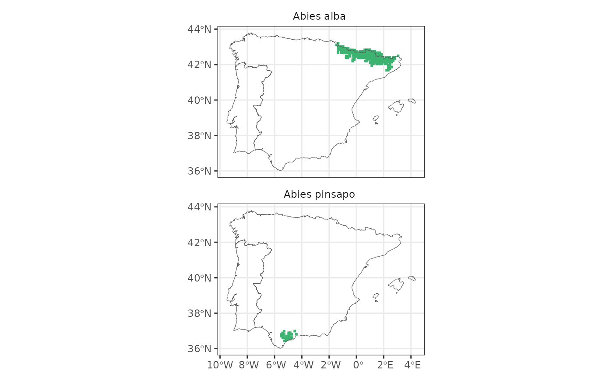
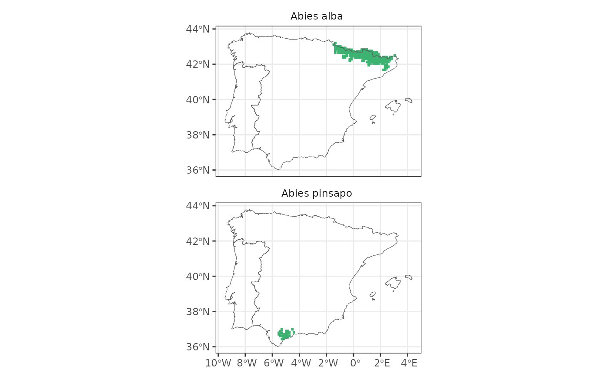

Get a map with the distribution of one or more taxa. Must provide either
an sf object (as returned by get_distribution()) or genus, species, subspecies...
Usage
map_distribution(
distrib.sf = NULL,
genus = NULL,
species = NULL,
subspecies = NULL,
taxo.level = "species",
facet = FALSE,
colour = "medium sea green",
include.name = TRUE,
...
)Arguments
- distrib.sf
An sf object as returned by
get_distribution().- genus
character. One or more genera to check for presence. Required, unless
gbif.idis provided.- species
character. Optional. One or more species names to check for presence. The length of
genusmust equal that ofspecies, unless length(genus) == 1, in which case it will be assumed that all species belong to that same genus.- subspecies
character. Optional. One or more subspecies names to check for presence. The length of
speciesmust equal that ofsubspecies, unless length(species) == 1, in which case it will be assumed that all subspecies belong to that same species.- taxo.level
character Taxonomic level to show in the map. Either genus, species (default) or subspecies.
- facet
Logical. For multiple taxa, make a single map with all taxa together, or make a multipanel (facetted) figure with one panel per taxa?
- colour
character. When there is >1 taxon, only used if facet = TRUE.
- include.name
Logical. When there is a single taxon to map, use taxon name as title?
- ...
Further params to be passed to
ggplot2::facet_wrap()if facet = TRUE, or toggplot2::geom_sf()if facet = FALSE.
Examples
laurus <- get_distribution("Laurus", "nobilis")
map_distribution(laurus)
 map_distribution(genus = "Laurus", species = "nobilis")
abies <- get_distribution("Abies")
map_distribution(abies)
map_distribution(abies, facet = TRUE, ncol = 1)

map_distribution(abies, taxo.level = "genus")
map_distribution(genus = "Laurus", species = "nobilis")
abies <- get_distribution("Abies")
map_distribution(abies)
map_distribution(abies, facet = TRUE, ncol = 1)

map_distribution(abies, taxo.level = "genus")